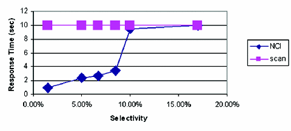

Figure 6: Scan versus nonclustered index when data is in memory. Access through a nonclustered index gives much better performance than scan until 10 percent of the tuples are selected, then scan and indexed access have similar performances. The reason is that the MySQL optimizer does not use indexes when accessing a table if selectivity is higher than 10 percent.
Back to Article